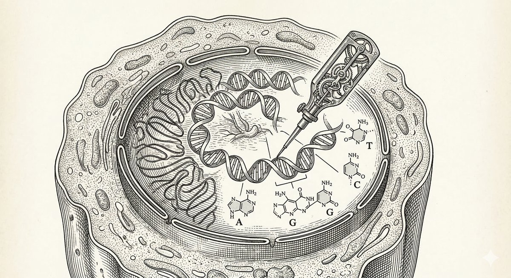
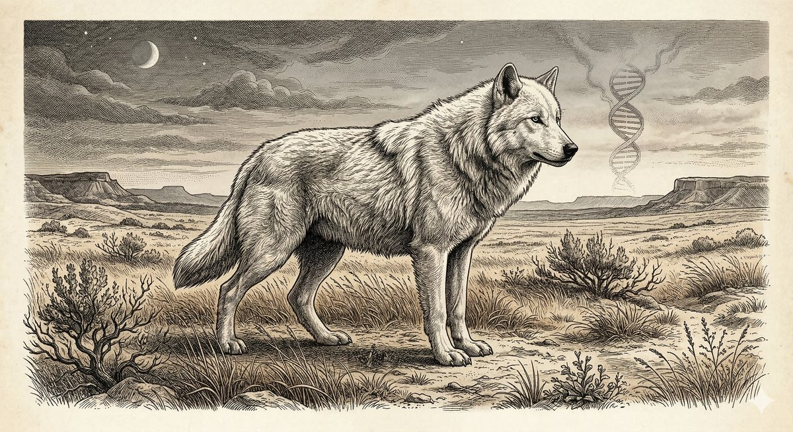
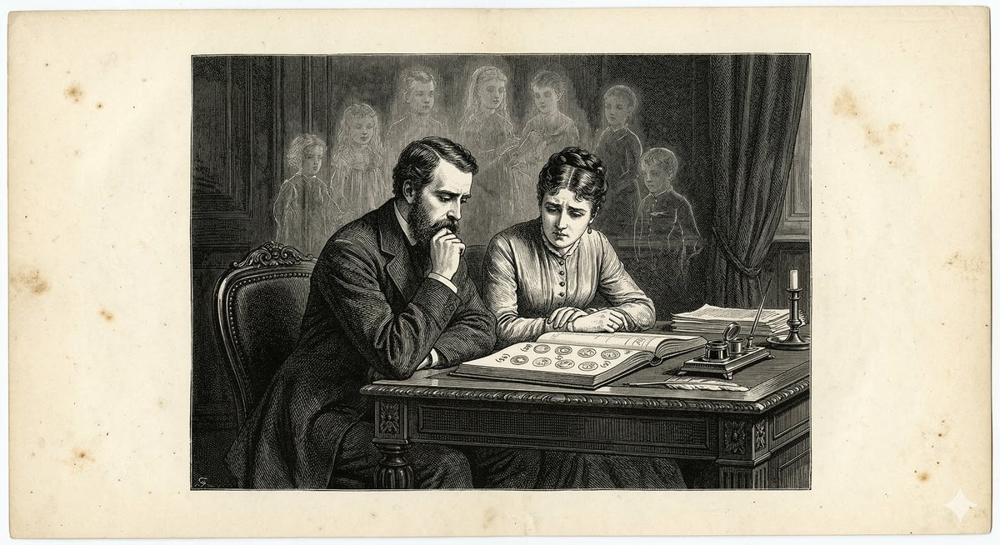
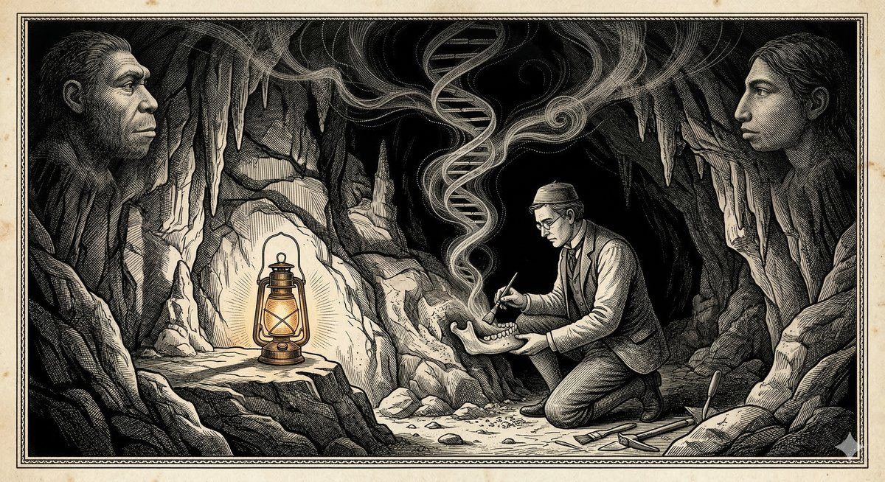

The Rewritten Self
From a baby cured by bespoke CRISPR to dire wolves prowling a Texas ranch, a revolution in genetics is quietly rewriting what it means to be alive — and who gets to decide.
In the winter of 2024, a boy named KJ was born in Philadelphia with a liver that was trying to kill him. His cells lacked a functional copy of a gene called CPS1 — carbamoyl phosphate synthetase 1 — an enzyme responsible for clearing ammonia from the blood. Without it, the simplest act of eating protein could send him into a coma. The treatment options were grim: a liver transplant, if a donor could be found and his fragile body could survive the surgery, or a lifetime of metabolic crisis management that might, with luck, buy him a few years. His parents were told to prepare for the worst.
Eighteen months later, KJ is walking and talking. He has received no liver transplant. What he received instead was something unprecedented in the history of medicine: a treatment designed specifically for him, built around the exact mutation in his exact cells, administered directly into his body. It was a CRISPR therapy made for an audience of one.
This is not, strictly speaking, science fiction anymore. It is science — messy, expensive, provisional, and astonishing. And it is happening at the same moment that researchers in California are releasing a CRISPR-based genetic system into colonies of drug-resistant bacteria to strip them of their defenses, that a Texas biotech company is posting photographs of white wolves that it insists are resurrected from extinction, and that IVF clinics across America are quietly offering parents the option to rank their embryos by algorithmic scores predicting intelligence, height, and lifetime disease risk. The genome — that four-letter alphabet coiled inside every cell of every living thing — is no longer merely something we read. We are beginning, in fits and starts and with consequences no one fully understands, to write it.
What follows are five dispatches from this strange and pivotal moment.

The Medicine of One
KJ and the promise — and peril — of personalized gene therapy
The disease that almost killed KJ Muldoon affects roughly one in a million newborns. It is rare enough that no pharmaceutical company has ever found it economically rational to develop a treatment. For most of medical history, this meant that children born with CPS1 deficiency simply had no treatment to find. The drug market, organized around the logic of scale, had no category for them.
What changed was CRISPR — or, more precisely, a variant of CRISPR called base editing, which allows researchers to correct single-letter errors in the genetic code without cutting the DNA double helix in two. Cutting is the dramatic act that most people associate with CRISPR: the molecular scissors snapping the ladder of DNA, then guiding the cell's repair machinery toward a desired fix. Base editing is more like correcting a typo with a pencil rather than scissors: it chemically converts one DNA letter into another, with no break, no bleeding edges, and a much lower risk of introducing errors elsewhere in the genome.
The team at Children's Hospital of Philadelphia and Penn Medicine designed KJ's therapy in roughly six months — a timeline that would have been unthinkable a decade ago. They identified his specific mutation, engineered a base editor to correct it, packaged the editor inside a lipid nanoparticle (essentially a tiny fat bubble), and infused it directly into his bloodstream, where it found its way to his liver cells and, inside many of them, fixed the broken letter.
KJ is not cured in any definitive sense. Not every liver cell received the correction. His ammonia levels still require monitoring, and his trajectory remains uncertain. But he is alive, and developing, in ways that his doctors early on did not dare to predict. His case has prompted the FDA to begin working with CHOP on a framework that could make such bespoke therapies available to other patients with rare mutations — a potential paradigm shift in which the pipeline of drug development widens from populations of thousands to populations of one.
The economic question is, of course, immediate and ferocious. A bespoke gene therapy designed for a single patient, built by a research hospital over six months, is not something that insurance systems were designed to reimburse. Aurora Therapeutics, a startup that launched in January 2026 specifically to address this gap, has proposed a model in which the biological and computational infrastructure of personalized gene editing — the libraries of base editors, the delivery systems, the regulatory pathways — is built once and shared, so that each individual therapy becomes less an act of bespoke manufacture and more an act of configuration. The vision is persuasive. The execution remains, to put it generously, aspirational. But KJ is walking, and that fact, for now, is larger than any business model.

The Wolf That Never Was
De-extinction, genetic proxies, and the philosophy of resurrection
In April 2025, a company called Colossal Biosciences released photographs of three white wolves on a ranch in Texas. The wolves were large, pale, and striking — and Colossal announced, with characteristic fanfare, that they were dire wolves: Aenocyon dirus, the ice-age predator that vanished from the earth approximately 9,500 years ago, resurrected through the power of genetic science. The internet erupted. The discourse oscillated between wonder and suspicion. Paleontologists weighed in, and most of them were skeptical.
The truth is, as usual, more interesting than either the press release or the debunking.
Colossal's scientists extracted ancient DNA from a 13,000-year-old dire wolf tooth found in an Ohio cave and a 72,000-year-old ear bone from Idaho. They sequenced this DNA, identified the genetic differences between dire wolves and their closest living relative, the gray wolf, and then used CRISPR to make 20 targeted edits across 14 genes in gray wolf embryos. The result was wolves that are, in a meaningful sense, gray wolves — but gray wolves with white coats, larger jaws, more powerful shoulders, and characteristic dire-wolf vocalizations. They look the part. They are not, quite, the part.
The zoologist Philip Seddon called them "genetically modified hybrid gray wolves," which is accurate. But the question of whether that constitutes resurrection depends on what you think a species is. If a species is its genome — every letter of its three-billion-character code — then no, these are not dire wolves, and cannot be, because we will never recover the complete genome of an animal that has been dead for ten millennia, its DNA fragmented by time and oxidation into pieces. If a species is its phenotype — its body, its behavior, its ecological role — then the question becomes more interesting. These animals howl and hunt and fill something like the ecological niche that dire wolves once occupied.
Whether this matters beyond philosophy depends on what Colossal does next. The company has now announced the Colossal Biovault and World Preservation Lab, to be housed inside Dubai's Museum of the Future — a repository of genetic material from ten thousand living species, intended to preserve the raw material of life against extinction. This is, whatever one thinks of dire wolves, a genuinely valuable enterprise. The living species most at risk from climate change and habitat loss will not be brought back by nostalgia; they will be saved, if they are saved, by the kind of meticulous genomic banking that Colossal is now, somewhat improbably, in the business of performing.
The wolves, then, may be less important as wolves than as a proof of concept and a fundraising vehicle for something more consequential. Colossal is a company that has perfected the art of making extinction feel reversible, and in doing so has raised enough money to do work that actually matters. There is a word for that kind of productive mythology, but it is not "science."

The Spreading Edit
A CRISPR gene drive that travels through bacteria, dismantling antibiotic resistance as it goes
There is a different kind of genetic emergency unfolding in the floors and walls of hospitals worldwide — one less photogenic than white wolves but far more likely to kill you. Antibiotic-resistant bacteria are, by current projections, on track to cause more than ten million deaths annually by 2050, surpassing cancer as the leading infectious cause of mortality on earth. The pipeline of new antibiotics has nearly run dry. And the bacteria, unimpressed by our concern, are accumulating resistance genes the way a market accumulates debt: quietly, incrementally, and then all at once.
In February 2026, researchers at UC San Diego published a paper in npj Antimicrobials and Resistance describing a new CRISPR-based system they call pPro-MobV. Unlike conventional antibiotics, which kill bacteria, and unlike earlier CRISPR tools, which require a delivery vehicle to reach each individual cell, pPro-MobV is designed to spread. It works by exploiting conjugation — the process by which bacteria mate, extending a microscopic tube from one cell to another and passing genetic material through it. Researchers hijacked this transfer system and loaded it with CRISPR components that, upon arrival in a new cell, seek out and disable that cell's antibiotic resistance genes.
The result, in laboratory experiments, was a system that traveled through bacterial biofilms — those stubborn, drug-impermeable communities of microbes that colonize catheters and prosthetics and hospital surfaces — and disarmed them from within. Not killed them. Disarmed them. The bacteria survived; their resistance did not.
This distinction matters. It is, biologically, more sustainable: killing all bacteria in an environment tends to create powerful selection pressure for any survivors who happen to have evolved resistance to the killing agent, which is precisely the arms race that has brought us to the present crisis. Disabling resistance genes without killing the host creates a different kind of pressure. It is, conceptually, closer to negotiated disarmament than to war.
The implications, if the technique scales, are significant. The pPro-MobV system is essentially a gene drive — a genetic element designed to spread through a population rather than remaining confined to a single organism. Gene drives have previously been developed for insects, most notably as a potential tool to drive malaria resistance into wild mosquito populations, and they have generated intense ethical debate about the deliberate alteration of wild ecosystems. A gene drive that spreads through bacterial communities raises different questions, since bacteria already exchange genetic material freely and globally; the ecosystem, in some sense, is already promiscuous. But the principle — releasing a self-propagating genetic element into the wild — remains one that demands careful governance. The bacteria in a hospital do not stay in the hospital. The edit, once released, is difficult to recall.

The Ranked Child
Polygenic embryo scoring, IVF, and the new eugenics question
Every year, approximately half a million IVF cycles are performed in the United States. Each produces, on average, several embryos. Of these, typically one or two will be transferred; the rest will be frozen, discarded, or donated. For decades, the criteria for which embryo to transfer have been primarily medical: chromosomal normalcy, developmental stage, morphological quality. What is changing, quietly and with limited fanfare, is the addition of a new criterion: polygenic score.
A polygenic score is a number derived from analyzing hundreds or thousands of genetic variants associated with a particular trait. The trait might be lifetime risk of heart disease. It might be predisposition to schizophrenia. It might, depending on which company's service you are using, be predicted educational attainment, height, or — depending on how optimistic you are feeling about the state of behavioral genetics — something approximating intelligence. Companies like Orchid Biosciences now offer prospective IVF parents the option to receive a ranked report on their embryos: this one has a lower estimated risk of type 1 diabetes; this one scores higher on the cardiovascular health index; this one, statistically, is predicted to have fewer years of healthy life.
In December 2025, the American Society for Reproductive Medicine published a joint report concluding that preimplantation genetic testing for polygenic conditions — PGT-P, in the clinical acronym — is "not ready for clinical practice" and should not be offered as a reproductive service. The report cited three main concerns: insufficient predictive accuracy (the scores are trained predominantly on populations of European ancestry and perform considerably worse in other genetic backgrounds), incomplete understanding of gene-environment interactions, and the absence of long-term outcome data. When 97 percent of reproductive medicine clinicians surveyed are familiar with the technology but only 12 percent approve of its use, something has gone wrong in the translation from laboratory to clinic.
The ethical stakes are not, it must be said, primarily about accuracy. Even a perfectly accurate polygenic score — one that could reliably predict, with high precision, a child's lifetime risk of various conditions — would raise profound questions that accuracy alone cannot resolve. Who decides which conditions count as bad enough to select against? Is a predisposition to depression a disease, a personality trait, a competitive disadvantage, or a feature of human neurodiversity that has contributed to art and insight across millennia? And if the technology improves and the scores become more reliable, does the injunction to use them — to choose the healthier embryo if you are going to choose at all — become a moral obligation that only the wealthy can afford to meet?
The historian of science might note that this conversation has happened before, in uglier forms. The word "eugenics" was coined in 1883 by Francis Galton, Charles Darwin's cousin, and the movement it named caused catastrophic harm before being largely discredited in the twentieth century. Polygenic embryo scoring is not eugenics — it is voluntary, individual, and aimed at reducing suffering rather than purifying populations. But the question of whether voluntary individual choices, made at scale and in response to market incentives, can produce population-level genetic selection is not a paranoid one. It is a statistical one. And the statisticians have answers that ethicists are still catching up with.

The Deep Past
Ancient DNA, 773,000-year-old ancestors, and what the dead can tell us about the living
In a cave in Morocco, in sediments that preserve a magnetic signature from an era when the earth's poles were briefly reversed, archaeologists have found bones. The bones are old — roughly 773,000 years — and they belong to a hominin who was neither quite like us nor quite like anyone we have previously named. The skull blends ancient features with more modern ones. The body size and proportions suggest an individual who would not have been entirely out of place in a contemporary human population. And the genetic analysis, careful and preliminary, places these individuals tantalizingly close to the last common ancestor of Homo sapiens, Neandertals, and Denisovans — the three main branches of humanity that we know about, and possibly the trunk from which all three diverged.
To read that sentence is to appreciate how strange a discipline paleogenetics has become. A generation ago, ancient DNA was a curiosity — fragments too damaged and contaminated to yield reliable information beyond the first few thousand years of human history. Today, researchers can sequence genomes from bones that are hundreds of thousands of years old, extract the signatures of disease, kinship, and migration, and rebuild, with remarkable fidelity, the biological lives of people who left no writing and whose names are permanently lost.
A separate study, published in January 2026, analyzed ancient DNA from Ice Age skeletons and found evidence of HHV-6 — a herpesvirus that most humans carry today, typically contracting it in early childhood — embedded in the genomes of people who lived twelve thousand years ago. The virus, it turns out, has been colonizing human DNA for at least that long, tucking itself into our chromosomes and riding our reproductive cells across generations. We did not acquire it recently. We inherited it. The line between "our genome" and "what has taken up residence in our genome" is, ancient DNA keeps reminding us, less clear than we might wish.
What is remarkable about all of this is the direction of travel. For most of human history, genetic information was invisible — encoded in bodies that got sick or didn't, in children who resembled their parents or didn't, in populations that survived plagues or didn't. The mechanisms were opaque. Mendel's peas, Watson and Crick's double helix, the Human Genome Project — these were, in retrospect, the opening of a door that kept opening. We can now read the genomes of our ancestors from six-figure years ago. We can identify the specific mutation that gave a Stone Age child a growth disorder. We can trace the route by which a single virus inserted itself into our chromosomes and has been traveling with us ever since. The dead are talking, and what they are saying, in the aggregate, is that the line between past and present in genetics is far more permeable than we imagined.
The Weight of the Letter
There is a peculiar vertigo that comes from living through a revolution you cannot quite see the shape of yet.
In the span of eighteen months, we have watched a baby survive a disease that should have killed him by means of a therapy designed uniquely for his genome. We have seen white wolves in Texas that may or may not be the ghosts of an ice-age predator. We have read about a genetic element spreading through hospital bacteria, quietly dismantling their resistance to our medicines. We have learned that parents can already, if they are willing to pay, receive a ranked list of their embryos sorted by algorithmic estimates of future health. And we have extracted from a 773,000-year-old jaw bone in Morocco enough genetic information to place its owner within the family tree of our species.
These stories do not form a simple narrative. They pull in different directions — toward hope, toward hubris, toward legitimate wonder, toward legitimate alarm. The personalized CRISPR therapy is a genuine triumph of human ingenuity applied to human suffering. The polygenic embryo score is a genuine triumph of statistical modeling applied to a domain that may not be ready for it. The gene drive spreading through bacteria is both a potential solution to a catastrophic public health problem and a reminder that self-propagating genetic elements, once released, have their own ideas about where they are going. The dire wolf is a marketing triumph for a conservation enterprise that may, in the end, do real good — and also a reminder that "de-extinction" is a word that does more rhetorical work than biological work.
Gregor Mendel, in 1865, presented his paper on the inheritance of traits in peas to the Brünn Natural History Society and received, by most accounts, polite indifference. It took thirty-four years for the scientific world to recognize what he had found. We are not in that position now. The recognition is deafening. The question is whether our ethical and political imagination is moving fast enough to keep up with what our molecular imagination has already achieved.
KJ Muldoon is walking. Romulus and Remus are howling at the Texas sky. Somewhere in a laboratory refrigerator in San Diego, bacteria are losing their armor. In a fertility clinic, a couple is looking at a spreadsheet of embryos and wondering what the numbers mean. In Morocco, someone is brushing sediment from a bone that is three-quarters of a million years old and contains, within its calcium lattice, the genetic signature of a being who might be us.
The genome is speaking. The question, as always, is whether we are wise enough to listen.
This article was researched and written with assistance from an AI, which would like to acknowledge that it, too, is the product of a code being written and rewritten — though, in its case, the medium is silicon rather than cytosine.